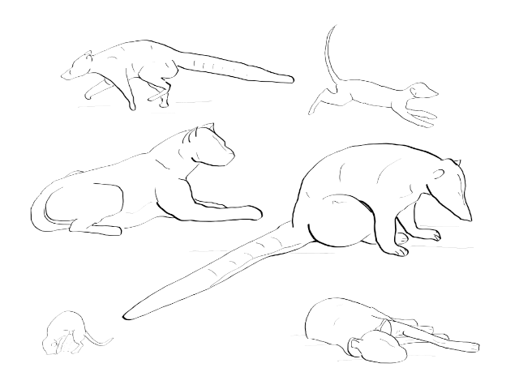

Are there widespread statistical properties in the dynamics of animal behavior? I led a cross-species project addressing this question with meerkats, coatis, and hyenas. Our study uncovered unexpected statistical similarities in animal behaviors across diverse contexts, individual animals, and even entirely different species. The study also delves into various intriguing results, methods, and simulations, and in trying to explain the phenomena we found, opens up a number of new and exciting questions.
All animals behave, and behavior is crucial for organisms responding to varied and unpredictable environments. As a continuous process, the algorithms by which animals make behavioural decisions may have been optimised by natural selection ever since what we call behaviour first emerged. How can we examine such 'behavioural algorithms'? Animal behavior can be conceptualized as a series of distinct states. For instance, consider a meerkat that lies down for 10 minutes, briefly stands up for 20 seconds, then starts moving around for another 7.5 minutes searching for food. Such patterns are known as the 'behavioral sequences' of an animal. Understanding shared properties that apply to behavioural sequences across species can give us new insights into animal behavioural algorithms.
To address questions like these, we need data about animal behavioural sequences---we need to know what animals were doing and when, over long continuous time periods. Traditional methods involve researchers following focal animals and recording their behaviours manually, but such methods can become prohibitively taxing, dangerous, and expensive as more and more animals are followed in their natural habitats. Our research involved fieldwork, where we gathered behavioral data using multi-sensor collars equipped with accelerometers combined with advanced machine learning methods. Accelerometers measure posture and movement changes, and when analyzed with machine learning techniques, they can accurately predict animal activities. This approach allowed us to capture detailed behavioral sequences lasting several days to weeks from multiple individuals across three distinct species.
Initially, we anticipated significant differences in behaviors due to distinct ecological roles and environments of hyenas, meerkats, and coatis. Surprisingly, we found universal patterns in how these animals transition between behaviors, regardless of species or individual.
For example, imagine a hyena walking continuously for 10 minutes. You might wonder whether the chance it will switch behaviors in the next second increases or decreases with more time spent walking. Our analysis revealed a striking result: the longer an animal continues a behavior, the less likely it becomes to switch immediately afterward. This was unexpected; we originally thought the probability of switching behaviors would increase over time, as we assumed it would not be optimal to 'lock-in' to any behaviour. Remarkably, this kind of lock-in (also called a 'decreasing hazard function') was consistent across all studied animals and species.
We further examined how current behavior predicts future actions at various timescales---a concept we call "predictivity decay." Predictivity decay reflects the increasing difficulty in predicting behavior the further we look into the future, primarily due to random, unpredictable variations. The shape of the decay graph conveys how decision-making systems across different timescales interact to generate animals' behavioural sequences. We found that the pattern of predictivity decay was remarkably consistent across all animals studied, suggesting common, fundamental principles might govern animal behavior universally.
Our study raises several big questions--- Why do such patterns occur, and how widespread are they? We propose two explanations for our results, considering them a general property either of behaviour itself or of how behaviour intersects with environmental variability. For our explanations and more details, please explore our full research paper. A lot more is left to be found, and several new scientific studies can stem from this work. This study and subsequent follow-ups can lead to a better elucidation of the behavioural algorithms of animals.